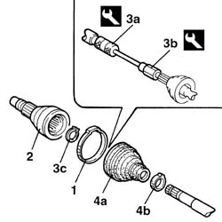

2710A54 l/h or r/h wheel end constant velocity joint (one) - r + r with drive shaft removed - including boot replacement
- Path
- Procedures > 27 AXLE > 2710 FRONT AXLE > 2710A drive shafts and joints > 2710A54 l/h or r/h wheel end constant velocity joint (one) - r + r with drive shaft removed - including boot replacement
- Kind
- repair procedure (removal / refitting; the operation number is the code)
- Applies to
- all engines; all production periods
- Interactive page
- https://sloeber94.github.io/elrnDB-fDbl/en/#/2584615
Applies to: all engines; all production periods
 Removing
Removing
 Refitting
RefittingPlace the drive shaft in a vice.
1. Remove the clip and push back the gaiter.
2. Remove the constant velocity joint from the drive shaft.
3. Clean the grease off the inside of the bearing housing, and, using tools (3a) and (3b) while at the same time using pliers on the retaining ring inside the joint, remove the ring (3c) fixing the constant velocity joint bearing.
4. Then remove the protective gaiter (4a), removing its retaining clip (4b).
 | Name | Country |
|---|---|---|
3a | Counter weight | 1.847.017.001 |
| Name | Country |
|---|---|---|
3b | Adaptor | 1.860.889.000 |

Applies to: all engines; all production periods
Refitting
RemovingCheck that the drive shaft is not deformed or out of true in the area where the joint fits, and that the area in contact with the seal is not worn.
Fit the new protective gaiter on the drive shaft.
Fit the bearing on the drive shaft.
Fill the protective gaiter and bearing with suitable grease.
 | Type | Component | Name | Qty. |
|---|---|---|---|---|
- | Grease | DRIVESHAFT CONSTANT VELOCITY JOINTS | TUTELA MRM 2 | - |
Position the constant velocity joint and fit it on the bearing with slight pressure.
Secure the protective gaiter to the joint, using two new clips.